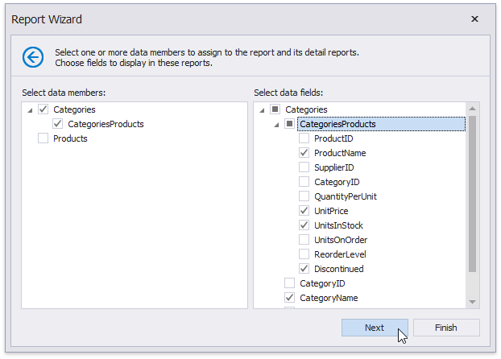
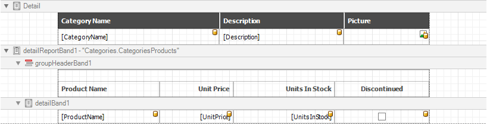

Choose Fields to Display in a Report
This wizard page allows you to select data members for a report and its detail reports as well as choose data fields to display in these reports.

The list on the left-hand side displays queries and master-detail relationships specified on the previous wizard page. Select required check boxes to create relevant reports and assign their DataMember property.
In the list on the right-hand side, choose data fields from the selected data members to include into corresponding reports.
After completing the wizard, the report is constructed according to the following:
- If you select one query, it assigns to the report's DataMember property. The selected fields with corresponding captions are automatically added to the report's Detail Band.
- If you select two or more queries, this creates the Detail Report Band for each query at the same hierarchical level. The DataMember properties of these detail reports are assigned to the corresponding queries.
- For each selected master-detail relationship, the Detail Report Band with the DataMember property set to this relationship is created under the corresponding master report.
You can stop the wizard at this step by clicking Finish. The created report looks similar to the image below.

If you want to customize the report further, click Next to go to the Add Grouping Levels page.